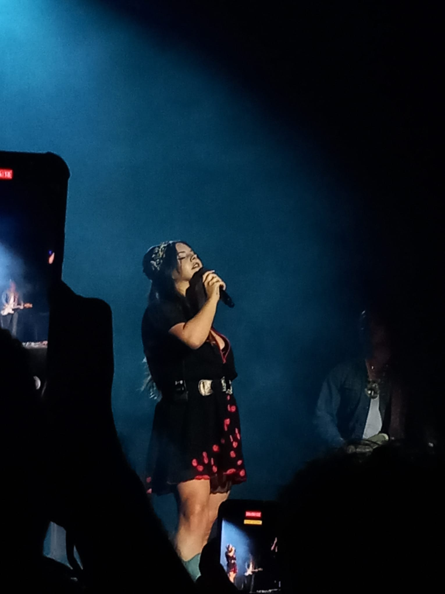

Vorig jaar heb ik een Stage gelopen bij de Leidse Schouwburg en dat vond ik best wel een grote stap aangezien je eigenlijk alles zelf moest regelen en met veel nieuwe mensen moest praten. Ik ben dan ook niet zo'n persoon die gewoon met iedereen praat, dus ik vond het erg spannend. Maar ik vond het heel leuk, gezellig en heb veel geleerd.
Vorig jaar moesten we met havo 3 naar Lille om Frans oprachten te doen. Niemand had er echt zin in en niemand vond de opdrachten leuk. Dat waren ze ook niet, want je moest tegen mensen gaan praten in het Frans.
